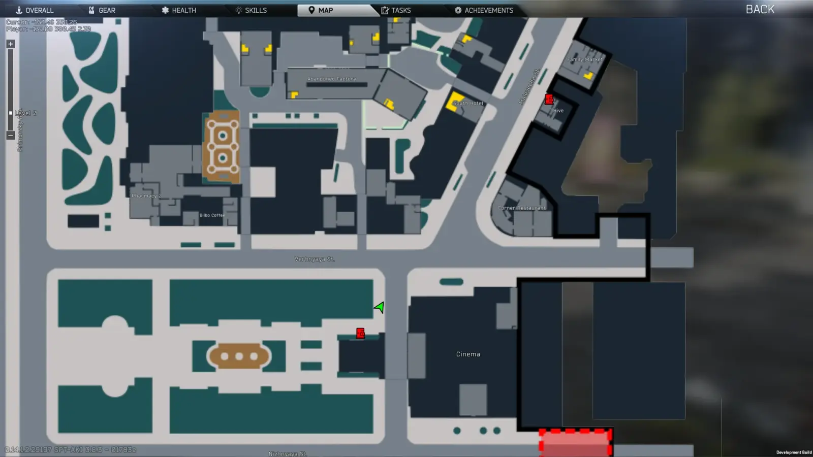
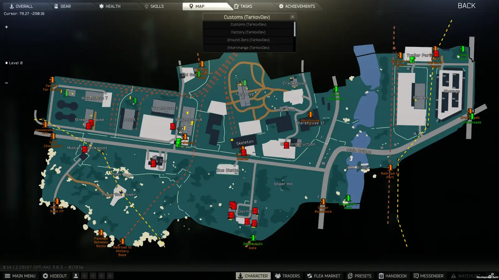
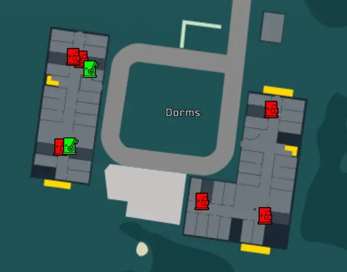
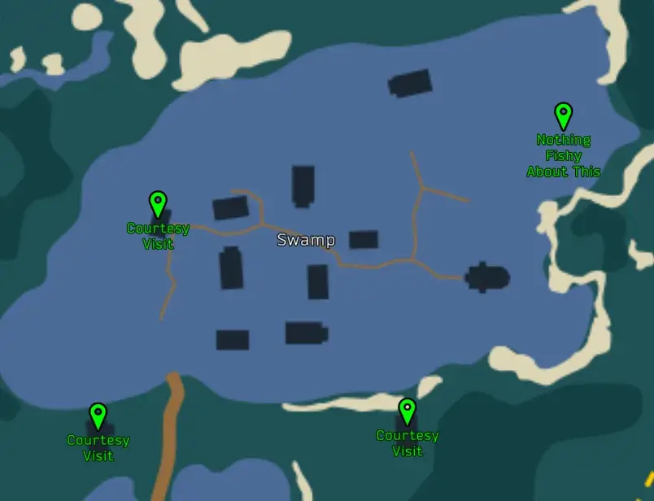

Dynamic Maps
- Downloads
- 725,970
- Favourites
- 329
- Mod lists
- 508
Notice: I’m stepping back from my SPT mods for now and have added some known community authors in the case that I am out of touch, which is very likely to happen in the next months. These authors are not obligated to anything, just want to make sure that someone can add a maintainer in the future. My SPT projects were started to keep me occupied after a death in my immediate family and I’ve lost interest in THE CITY for now.
Tired of getting lost? Here’s an in-game map viewer with dynamic information overlaid on-top, including extracts, quests, player and teammate markers, corpses, the BTR, player-dropped backpacks, airdrops, and locked doors. More features after the screenshots.

In-game map with player marker

All maps accessible outside of raid

Dynamic Locks

Quest Markers
- Download Dynamic Maps
- Open the downloaded zip file in 7-zip
- Select all folders in the zip file in 7-zip
- Drag the folders from 7-zip into your SPT folder
Demonstration Video (yoink):

Dynamic Maps is compatible with Fika.
- Do not install the Bepinex side of this mod on the Fika Headless client, it will not load.
- All clients should have it, but it is not required for all clients to have.
- The Fika Server must have the Dynamic Maps Server side of the mod installed.
- Map organized in stacked layers / levels
- Text map labels supported overlaid on map
- Automatic selection of layer based on player position (configurable)
- Manual level control available on left of map screen (as well as shift-scroll and configurable hotkeys)
- Automatic min/max zoom based on size of map
- Support for coordinate rotation, since Big Silly Goose decided to make north different direction on many of the maps
- Drag-based map pan and mousewheel-based map zoom controls; additional hotkeys for map control available (configurable)
- Peek at map hotkey (configurable)
- Minimap (configurable)
- Icon-based map markers placed both statically and dynamically. Currently:
- In-raid dynamic player icon
- In-raid dynamic current extracts for player
- In-raid dynamic quest icons (loosely based on Prop’s GTFO)
- In-raid dynamic player-dropped backpacks
- In-raid dynamic BTR icon (with icon by Kuromi, see marker_credits.txt for more info)
- In-raid dynamic airdrop icons (generated when airdrop lands)
- In-raid dynamic markers for corpses
- In-raid dynamic other players/bots icons
- Friendly players will only show if using another mod that adds multiplayer or adds friendly bots (not sure if that exists)
- Enemy players, bosses, and scavs off by default, intended for mostly debug
- Static markers for all extracts for all maps out-of-raid
- Statically-loaded locked door with dynamic icon and color based on key status
- Out-of-raid, green with key means player has it in inventory, yellow with key means key in stash, red with lock otherwise
- In-raid, green with key means player has the key, red with lock means player doesn’t have key
- Static markers for switches and levers
See KNOWN_ISSUES.md for known current issues and FEATURE_WISHLIST.md for a list of things that I would like to work on in the future.
If you’re enjoying the mod or have a suggestion, please leave a comment**!**
General
- Replace Map Screen: If the map should replace the Big Silly Goose default map screen, requires swapping away from modded map to refresh
- Center on Player Hotkey: Pressed while the map is open, centers the player
- Move Map * Hotkey: Hotkey to move the map *
- Move Map Hotkey Speed: How fast the map should move, units are map percent per second
- Change Map Level * Hotkey: Hotkey to move the map level * (shift-scroll also does this in map screen)
- Zoom Map * Hotkey: Hotkey to zoom the map * (scroll also does this in map screen)
- Zoom Map Hotkey Speed: Zoom Map Hotkey Speed
- Dump Info Hotkey: Pressed while the map is open, dumps json MarkerDefs for extracts, loot, and switches into root of plugin folder (only shows in advanced config mode)
Dynamic Markers
- Show Player Marker: If the player marker should be shown in raid
- Show Friendly Player Markers: If friendly player markers should be shown
- Show Enemy Player Markers: If enemy player markers should be shown (generally for debug)
- Show Scav Markers: If enemy scav markers should be shown (generally for debug)
- Show Boss Markers: If enemy boss markers should be shown
- Show Locked Door Status: If locked door markers should be updated with status based on key acquisition
- Show Quests In Raid: If quests should be shown in raid
- Show Extracts In Raid: If extracts should be shown in raid
- Show Extracts Status In Raid: If extracts should be colored according to their status in raid
- Show Dropped Backpack In Raid: If the player’s dropped backpacks (not anyone elses) should be shown in raid
- Show BTR In Raid: If the BTR should be shown in raid
- Show Airdrop In Raid: If airdrops should be shown in raid when they land
- Show Friendly Corpses In Raid: If friendly corpses should be shown in raid
- Show Player-killed Corpses In Raid: If corpses killed by the player should be shown in raid, killed bosses will be shown in another color
- Show Friendly-killed Corpses In Raid: If corpses killed by friendly players should be shown in raid, killed bosses will be shown in another color
- Show Boss Corpses In Raid: If boss corpses (other than ones killed by the player) should be shown in raid
- Show Other Corpses In Raid: If corpses (other than friendly ones or ones killed by the player) should be shown in raid
In-Raid
- Auto Select Level: If the level should be automatically selected based on the players position in raid
- Auto Center On Player Marker: If the player marker should be centered when showing the map in raid
- Reset Zoom On Center: If the zoom level should be reset each time that the map is opened while in raid
- Centering On Player Zoom Level: What zoom level should be used as while centering on the player (0 is fully zoomed out, and 1 is fully zoomed in)
- Peek at Map Shortcut: The keyboard shortcut to peek at the map
- Hold for Peek: If the shortcut should be held to keep it open. If disabled, button toggles
- Tyfon’s UI Fixes
- DrakiaXYZ’s Equip from Weapon Rack, Quick Move to Containers, Quest Tracker, Task List Fixes
- ChooChoo’s Trader Modding and Improved Weapon Building
- CJ’s Stash Search, which I have contributed to
- My other mods Quick Weapon Rack Access, Player Encumbrance Bar, and Simple Crosshair
Version
1.1.3
This version will only work for SPT 4.0.x
Actually last hotfix probably who knows, I do what I want
Bugs Squashed
- Resolved minimap not being at the correct position on initial spawn
Version
1.1.2
This version will only work for SPT 4.0.x
Hopefully last hotfix unless people find more issues.
Changes
- When changing map on Menu Screen, the map will load at minimum zoom and centered now
Bugs Squashed
- Resolved zoom/position issues with the peek map when the minimap is enabled
- Resolved adjusting the main map zoom manually in the config trying to adjust the zoom level on the minimap in raid
- Probably resolved NRE caused by Looting Bots bots trying to loot something that can’t fit, then throwing it on the ground, then looting it again when it’s an item that should display on the map due to settings
- Resolved level select slider disappearing on Menu Map when changing to a map with 1 level, then changing to another map with multiple levels
Stop using mod managers to try and install this.
Version
1.1.1
This version will only work for SPT 4.0.x
New Features
- F12 option to enable/disable zooming into the mouse instead of center on Menu Map
Changes
- In-raid MiniMap is now 30~ FPS for performance
- Map is now clamped (no longer lose the map on accident or flinging it off screen and having to remember the center hotkey)
- Big changes to Scroll Zoom / Drag on Menu Map (much smoother)
- Tried to fix a few subscriptions not unsubscribing properly on destroy, there’s probably still more of these (the random NRE on raid end)
- Peek map will reset to Min Zoom & Center the map if you disable AutoCenter On Player + Reset Zoom + Retain Map Pos
Bugs Squashed
- Resolved the per map zoom levels fighting each other by normalizing the config zoom to 0-1f (% based)
- Resolved the map zoom values not updating if you happen to change the zoom via F12
- Resolved Labyrinth Menu map not automatically displaying the exfil names
- Resolved the peek map flinging away randomly depending on AutoCenter/Reset Zoom/Retain Map F12 settings
- Resolved more zoom logic issues
Version
1.1.0
This version will only work for SPT 4.0.x
Known: Still zoom issues sometimes cause f the minimap
New Features
- Changes maps to load via SVG
Changes
- Slightly adjusted how zoom logic works to better handle configuration options
Bugs Squashed
- Resolved issue with zoom logic rotating away/towards player when zooming on peek (probably)
Mod now ships with required dependencies for SVG support
If removing Dynamic Maps, you can remove the following files from \SPTROOT\EscapeFromTarkov_Data\Managed to ensure full uninstallation
- Unity.InternalAPIEngineBridge.003.dll
- Unity.VectorGraphics
Mod now ships with the required licenses for the map SVGs themselves, and is notated where I have adjusted them as per requirements of the license itself. This includes shipping with a license for Labyrinth, which I made myself by hand.
Version
1.0.5
This version will only work for SPT 4.0.x
Bugs Squashed
- Fixed Transit Markers not displaying on Fika
Version
1.0.4
This version will only work for SPT 4.0.x
Bugs Squashed
- Fixed NREs from Airdrop containers. Especially needed for Fika users.
Version
1.0.3
This version will only work for SPT 4.0.x
Bugs Squashed
- Fixed Labyrinth Bosses/Helpers showing incorrectly as Scavs.
Version
1.0.2
This version will only work for SPT 4.0.x
New Features
- Labyrinth Map
- Labyrinth was custom made by me, so may have some inaccuracies.
Changes
- Replaced unnecessary reflection (Thanks Lacyway)
Bugs Squashed
- Fixed invalid method reflection (Thanks Lacyway)
Version
1.0.1
This version will only work for SPT 4.0.x
Hotfix
Bugs Squashed
- Fix Map Item check
- Fix Quest Markers
- Fix thrown backpacks/items/etc
Version
1.0.0
This version will only work for SPT 4.0.x
Changes
- Added description text to the map items (You forgot these existed, didn’t you? They’re available at Therapist.)
Fika Compatibility
- Added ability for server owners to prevent users from enabling bot markers
Version
0.5.7
This version will only work for SPT 3.11.x
Version bump to create a new release on the hub
No changes from 0.5.6
Version
0.3.4
For SPT 3.9.* only.
Changelog
- FIX: Minor issue that caused MapPeek GameObject to be retained after a raid
SHA-256: 8aa5bd34b1366411704d37bcb52844760e17e139587ec4409a516dc3d9be9cd9
Version
0.3.2
For SPT 3.9.* Only
Changelog
- Updated for SPT 3.9.* with no other changes. Thanks ArchangelWTF/Jesse for the headstart.
SHA-256: 0a698fad43758a889e265786f8c2c9e19d4da2850f455d15267ee6d137cc6544
Not much testing has been done, let me know if you run into an issue!
Version
0.3.1
For SPT 3.8.*
KNOWN ISSUE: NRE log spam on player marker, doesn’t seem to affect gameplay, but will affect performance. Will fix ASAP.
Changelog
- FEATURE: Add BTR marker (Thanks Kuromi for the custom icon!)
- FEATURE: Add player-dropped backpack marker (note: shows for all backpacks dropped by p)
- FEATURE: Add friendly-killed corpse markers option
- FEATURE: Add boss corpse marker option
- FIX: Markers for PMCs/Scavs on mounted guns should now properly be removed (probably tied to Big Silly Goose bug)
- FIX: Quests that must be completed in one raid should now properly display markers for conditions that were reset (Thanks Utjan for the digging!)
- TWEAK: Add unique color for boss corpses (Thanks GavinRay97)
- TWEAK: Changed friendly player markers to a lighter blue
- TWEAK: Changed “Other Corpses” to be white instead of yellow
You should still consider this mod unstable: please report all issues!
SHA-256: 268bebd7567aaf3dbceb073ab36edb1eedb7912f822a30187a09b7ba9f6ced1f
Version
0.3.1+3
For SPT 3.8.* Only
Changelog
- FIX: Optional quest markers are now removed when they are completed
- FIX: Resolve issue that could arise if invalid LootItem was registered, which sometimes happened with airdrops
- MINOR: EFT version is now checked before loading mod, as currently this is tied to specific version of EFT
SHA-256: d1c198f81cceb9c1a8c309dd93bd2a31c448962b41319605c82fc0aba9d1867f
Version
0.3.1+2
For SPT 3.8.*
Changelog
- FIX: Boss markers should now be properly enabled if it the only other player marker enabled (i.e. you disabled Friendly Player Markers)
- FIX: Boss corpse markers should now be enabled by its config instead being tied to “Other Corpses”
- TWEAK: Add some additional bosses to tracked bosses (Cultist Priest, Blood Hounds)
You should still consider this mod unstable: please report all issues!
SHA-256: db50e3bb16babe9cd61f661c259d29a712a8d44a9156b056da06afa0ef3b7d54
Version
0.3.1+1
For SPT 3.8.*
Hotfix: Fixes potential 0.3.1 NRE log spam probably: if you see any exceptions in your BepInEx log from DynamicMaps, PLEASE let me know.
0.3.1 Changelog
- FEATURE: Add BTR marker (Thanks Kuromi for the custom icon!)
- FEATURE: Add player-dropped backpack marker
- FEATURE: Add friendly-killed corpse markers option
- FEATURE: Add boss corpse marker option
- FIX: Markers for PMCs/Scavs on mounted guns should now properly be removed (probably tied to Big Silly Goose bug)
- FIX: Quests that must be completed in one raid should now properly display markers for conditions that were reset (Thanks Utjan for the digging!)
- TWEAK: Add unique color for boss corpses (Thanks GavinRay97)
- TWEAK: Changed friendly player markers to a lighter blue
- TWEAK: Changed “Other Corpses” to be white instead of yellow
You should still consider this mod unstable: please report all issues!
SHA-256: 25ee9fe33c221e0bb74aff43c1fa9cb91b2b679b9c32d25b305f540d0205ab1a
VirusTotal Result
Known issue: Show Boss Corpses is bugged, use Show Other Corpses to see both boss corpses and other corpses.
Version
0.3.0
For SPT 3.8.* only
Changelog
- MAJOR: Added “Peek at Map” feature, which will allow you to glance at the map without opening the inventory, configurable
- FEATURE: Added separate boss marker option, which will use a different star icon
- FEATURE: Added hotkeys for map manipulation, available to use both during peek and in map screen
- FEATURE: Added dynamic markers for corpses, separated into friendly, killed-by-player, and other
- CHANGE: Renamed “Enabled” config option to “Replace Map Screen”
- CHANGE: Map layer images are cached during initial load of game, which was the majority of map load times
- CHANGE: Defaults for map centering on player in-raid changed to be less annoying. notably disabled by default
- FIXED: Nicknames for player icons are now transliterated if needed
This is a big update, so likely there are bugs! Please report all issues!
SHA-256: 2a81de1bb421eb06bb1a9e5fe0f3ddd0f6a3909b1152192c46bb110cec02b2d0
Version
0.2.1
For SPT 3.8.*
Changelog
- FEATURE: Add airdrop dynamic markers
- FEATURE: Add “Center on Player” hotkey config
- FIX: Some dynamic markers, particularly markers for other players, may fail to have text initialize properly yielding MEGA text without outline. Now should retry each time the user mouses over marker or hides/shows
- FIX: Only get extract information once during raid instead of each time the map was opened and get it slightly differently, may resolve some issues with extracts that I could not reproduce
- FIX: Shoreline utility room had malformed key id
- FIX: Customs Dorms third floor boundary for auto level detection
- FIX: Slightly adjust factory bounds
PROBABLY STILL UNSTABLE: PLEASE REPORT ALL ISSUES!
Version
0.2.0
For SPT 3.8.*
Changelog
- FEATURE: Added basic config
- FEATURE: Showing map in raid will center on player and have the zoom reset to slightly zoomed in, configurable
- FEATURE: Show friendly players on map, configurable
- FEATURE: For debug or just because: show enemy PMCs and scavs on map, configurable, default off
- FIX: Scav raids extracts were somehow being randomized by inspecting them (Why Big Silly Goose!?)
- FIX: Resolve creating duplicate quest markers in some instances
- COMPAT: Custom quest flare zones should be more compatible
PROBABLY STILL UNSTABLE: PLEASE REPORT ALL ISSUES!
Version
0.1.3
For SPT 3.8.*
Sorry for the version spam!
Changelog
- FIX: Resolve regression with attempted Fika fix
- FIX: Don’t allow map filter if nothing matches that filter
PROBABLY STILL BUGGY – REPORT ALL BUGS PLEASE!
Version
0.1.2
For SPT 3.8.*
Changelog
- FIX: Disable zooming with scroll-wheel if the map select dropdown is down (which also uses the scroll wheel)
- COMPAT: Try to resolve Fika incompatibility that borked the in-raid detection, causing the lack of a player marker and quest markers
- COMPAT: Attempt to better support custom quests
PROBABLY STILL BUGGY – REPORT ALL BUGS PLEASE!
KNOWN ISSUES:
- There is something wrong with the fika fix with this version. Will fix as soon as I can.
Version
0.1.1
For SPT 3.8.*
Changelog
- ENHANCEMENT: Added shift-scroll shortcut to move up and down levels
- FIX: Resolve Woods out-of-raid static extracts showing in-raid
- FIX: Remove unused shortcut configuration – I will be revisiting this in the future, it was more complicated than I expected
PROBABLY BUGGY – REPORT ALL BUGS PLEASE!
Known Issues: Incompatible with Fika; next version will fix.
Version
0.1.0
For SPT 3.8.*
Initial release
PROBABLY BUGGY – REPORT ALL BUGS PLEASE!
Known issues:
- The keyboard shortcut is currently unimplemented, it turned out to be harder than I thought it would be and I forgot to remove the config for it.